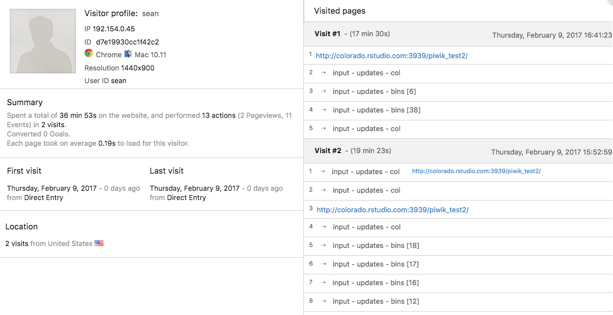

You may want to track visitors to your Shiny application and analyze how they interact with it. This article will demonstrate techniques for implementing 3rd party tools that track and analyze usage metrics.
Author
Sean Lopp
Published
January 23, 2017
You may want to track visitors to your Shiny application and analyze how they interact with it. This article will demonstrate techniques for implementing 3rd party tools that track and analyze usage metrics.

Example Matomo Dashboard
Background
There are two types of metrics that can be tracked and analyzed for a Shiny application: usage metrics and hosting metrics.
Usage metrics provide valuable insights such as the number of unique visitors to an application, a user’s typical behavior (what inputs are changed, time on the application) and information about the visitor (location, browser, screen size). Implementing usage metrics typically requires Javascript. This article does not provide a comprehensive overview, but most Shiny users should be able to implement these techniques.
Hosting metrics deal with how responsive the application is to concurrent use, how fast the application loads, and what server resources are appropriate for the application. Tools and techniques for analyzing hosting metrics are covered in the admin guides for shinyapps.io, Posit Connect, and Shiny Server and additionally in support articles on Performance Tuning in Shiny Server Pro and Performance Tuning in Posit Connect.
Google Analytics / Matomo
There are many 3rd party tools that provide usage tracking for web applications. Picking the appropriate tool will depend on your requirements. Luckily, the steps necessary to integrate these tools with Shiny applications are similar. This article covers the patterns along with specific examples for Google Analytics and Matomo.
Matomo is an open-source tool that can be hosted on-premise. Subscription based support and online, hosted versions are also available.
Once you’ve selected a specific platform and setup the tool there are three common steps to integrate usage tracking into a Shiny application:
Add a Tracking ID
Incorporate Event Tracking
Capture User ID
Step 1 is required for Steps 2 and 3. Steps 2 and 3 are often optional and are independent (Step 3 can be implemented with or without Step 2 and vice-versa).
Adding Javascript to Shiny Applications
All 3 steps will require adding Javascript to your Shiny application. There are a few ways to do so:
Add a separate .js file to the application directory and include the file by using the function includeScript(). Warning: the includeScript function places the content of the script inside a pair of script tags <script></script>. If you copy and paste Javascript code into a .js file be sure to remove these tags. This method is nice because is separates the tracking code from the application code.
Add the Javascript within the Shiny application’s UI code using the tags$script function. Similar to includeScript, this function expects Javascript so do not include the script tags <script></script>. For example:
Javascript can be inserted into the body of the HTML file or in the head of the file. Some usage tracking code needs to go in the head. To place code in the head of the HTML file use the tags$head function in combination with one of the methods above.
Step 1: Enable Tracking
The first step to enable tracking is to add tracking code. This code is typically provided after registering the Shiny application and is designed to be copied directly into the head of the HTML file.
Template
```{r}# pseudocodeui <- fluidPage( tags$head(tags$script(HTML( // Copy and Paste from 3rd Party Provider ))), ...)```
This code sets up tracking for page views. Every time a browser requests your application, this Javascript code records and sends information on the browser’s location, the type of device, screen resolution, and potentially other metrics. Depending on provider, this code can also provide insight into page load times.
Google Analytics
Google Analytics 4 uses the Google tag and gtag.js to collect user interaction data. As of July 1, 2023, this method completely replaces the previous style of page tracking, called Universal Analytics.
```{r}ui <- fluidPage( tags$head(HTML("<!-- Google tag (gtag.js) --><script async src=\"https://www.googletagmanager.com/gtag/js?id=TAG_ID\"></script><script> window.dataLayer = window.dataLayer || []; function gtag(){dataLayer.push(arguments);} gtag('js', new Date()); gtag('config', 'TAG_ID');</script>" )), ...)```
In addition to page loads, it can be valuable to track the events that occur on a specific page. An event is an action that a user can take. For example, changing a select input would be an event. Most tracking tools provide a Javascript function for tracking events. Tracking events can provide insight into the actions a user is taking in an application: which inputs are changed, how frequently they change, and the order in which they change.
The following template adds basic tracking for an application’s inputs. The template relies on Shiny’s Javascript events.
shiny:inputchanged acts as a trigger. The subsequent function is called anytime the app’s inputs change. (To conceptually understand, think of this process as being similar to Shiny’s observeEvent(input, {function}) pattern). Sometimes shiny:inputchanged will be triggered without the inputs changing, see this article for details.
event When the input changes, the Javascript function will have access to the event object. The event object includes the name of the input that was changed, event.name, and the new value of the input, event.value.
trackingFunction This is a made up function! This function will be implemented by the 3rd party metrics provider. See the specific examples below for Matomo and Google Analytics. Usually this function looks like: trackingFunction('trackEvent',Category, Action, Label, Value). The function is responsible for recording the event. Category, Action, Label, and Value provide more information about the event that can be helpful when analyzing user’s history. In this template I set Label equal to event.name and Value to event.value. I’ve hardcoded Category to input and Action to updates. The Google Analytics help page provides more information.
As an example, imagine a simple Shiny application with a selectInput named ‘model’ that can be either ‘A’ or ‘B’ and a numericInput named ‘value’. If I interact with the application, the trackingFunction from our template would send the following information to the metrics server:
02:00:00 192.154.0.45 'input''updates' model 'A'02:01:00 192.154.0.45 'input''updates' model 'B'02:01:00 192.154.0.45 'input''updates' value 30
This trace corresponds to a user with IP address 192.154.0.45 who toggled the select input between ‘A’ and ‘B’ and set the numeric input to 30. Category was hardcoded as ‘input’ and Action was hardcoded as ‘updates’.
This modified template uses if statements to filter by the name of the input. Changes to the model and plot inputs are tracked, but not changes to textInput. model inputs and plot inputs are labelled separately using the ‘Category’ attribute.
The event tracking code can be specialized to accommodate many levels of tracking.
It is also valuable to link usage metrics to specific users. To do so, we can send the username to the metrics server. Sending the username only works for applications that require authentication. For other applications session$user is null. Sending the username is similar to sending an event.
Note
This feature requires Shiny version 1.0.1 or above.
$(document).one('shiny:idle' This portion of JQuery makes sure the function fires once after the application has loaded.
Shiny.user This object contains the username
trackingFunction('setUserId', Shiny.user) Similar to event tracking, this is a made up function. The specific function to use will be implemented by the 3rd party tracking tool.
trackingFunction('trackPageView') After setting the username, any events sent to the metrics server will be associated with the username. However, the initial page load occurs before the Shiny.user object is available and before the username is sent to the metrics server. This code tells the metrics server to link the page view to the username.
The following examples are working applications for both Matomo and Google Analytics. For these examples, the Javascript is written to a separate file and included using the includeScript function. Note that you will have to setup Matomo or Google Analytics before using these examples.
app.R
library(shiny)ui <-fluidPage(# -- Add Tracking JS File tags$head( tags$script(async =NA,# !! Replace with your TAG_ID !!src ="https://www.googletagmanager.com/gtag/js?id=TAG_ID" ) ) tags$head(includeScript("google-analytics.js")),# ...or remove the above and use matomo.js instead# tags$head(includeScript("matomo.js")),# -- Application UIsidebarLayout(sidebarPanel(sliderInput("bins", "Number of bins:",min =1, max =50, value =30),selectInput("col", "Barplot Color",c("blue", "grey", "purple", "orange"), selected ="grey") ),mainPanel(h1(textOutput("user")),plotOutput("distPlot") ) ))server <-function(input, output, session) { output$user <-renderText({paste0("Hello ", session$user,"! This app is tracked by Matomo") }) output$distPlot <-renderPlot({ x <- faithful[, 2] bins <-seq(min(x), max(x), length.out = input$bins +1)hist(x, breaks = bins, col = input$col, border ='white') })}shinyApp(ui = ui, server = server)
google-analytics.js
// Initial Tracking Setup Codewindow.dataLayer=window.dataLayer|| [];functiongtag(){dataLayer.push(arguments);}gtag('js',newDate());// !! Replace with your TAG_ID !!gtag('config','TAG_ID');gtag('event','page_view');// Event Tracking Code$(document).on('shiny:inputchanged',function(event) {if(event.name=='bins'||event.name=='col'){const data = {name:event.name,value:event.value };gtag('event','input_updates', data); }});// User Tracking Code$(document).one('shiny:idle',function() {gtag('set', { userId: Shiny.user });});
matomo.js
// Initial Tracking Codevar _paq = _paq || [];_paq.push(['enableLinkTracking']);_paq.push(['enableHeartBeatTimer']);(function() {var u ='<YOUR_MATOMO_URL>'; _paq.push(['setTrackerUrl', u+'matomo.php']); _paq.push(['setSiteId','<YOUR_APP_ID>']);var d =document, g = d.createElement('script'), s = d.getElementsByTagName('script')[0]; g.type='text/javascript'; g.async=true; g.defer=true; g.src= u+'matomo.js'; s.parentNode.insertBefore(g,s);})();// Event Tracking Code$(document).on('shiny:inputchanged',function(event) {if (event.name==='bins'||event.name==='col') { _paq.push(['trackEvent','input','updates',event.name,event.value]); }});// User Tracking Code$(document).one('shiny:idle',function(){ _paq.push(['setUserId', Shiny.user]); _paq.push(['trackPageView']);});